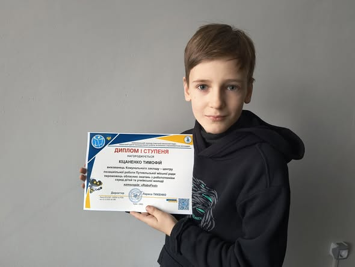
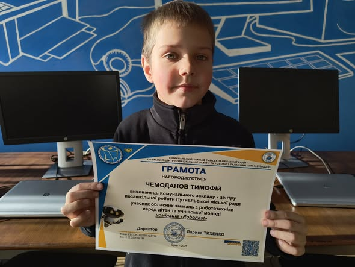
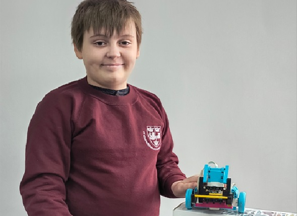
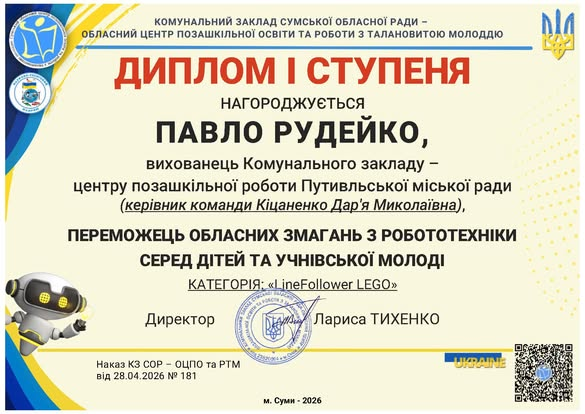
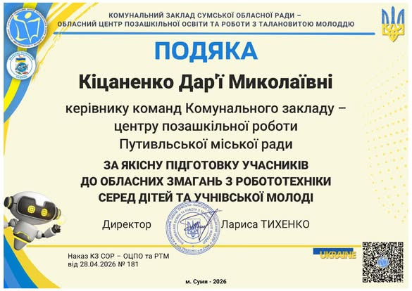

Наші хлопці — найкращі! Подвійна перемога на обласних змаганнях з робототехніки!





Вихованці гуртка «Робототехніка» тріумфально виступили на обласних змаганнях, довівши, що наполегливість, талант та інженерна думка приносять заслужені нагороди.
🏆 Перше місце та цінний досвід
Кіцаненко Тимофій здобув І місце в номінації «RoboFest», продемонструвавши креативність, наполегливість та справжнє інженерне мислення. Чемоданов Тимофій отримав грамоту за участь, зробивши важливий крок у своєму розвитку та здобувши цінний досвід. Ми щиро пишаємося нашими вихованцями та віримо, що попереду на них чекає ще багато перемог, ідей та відкриттів!
🥇 Ще одна перемога — LineFollower Lego
Вихованець гуртка «Робототехніка» Рудейко Павло також здобув І місце в обласних змаганнях у категорії LineFollower Lego. Змагання стали чудовою нагодою для юних техніків продемонструвати свої знання, навички конструювання та програмування роботів, уміння знаходити ефективні технічні рішення й працювати на результат. Павло показав високий рівень підготовки, уважність та наполегливість.
Вітання переможцям!
Щиро вітаємо Тимофія Кіцаненка, Тимофія Чемоданова та Павла Рудейка з блискучими результатами! Бажаємо нових звершень, цікавих проєктів і подальших успіхів у світі робототехніки. Наші хлопці — дійсно найкращі!
Кіцаненко Тимофій — І місце (RoboFest)
Чемоданов Тимофій — грамота за участь (RoboFest)
Рудейко Павло — І місце (LineFollower Lego)